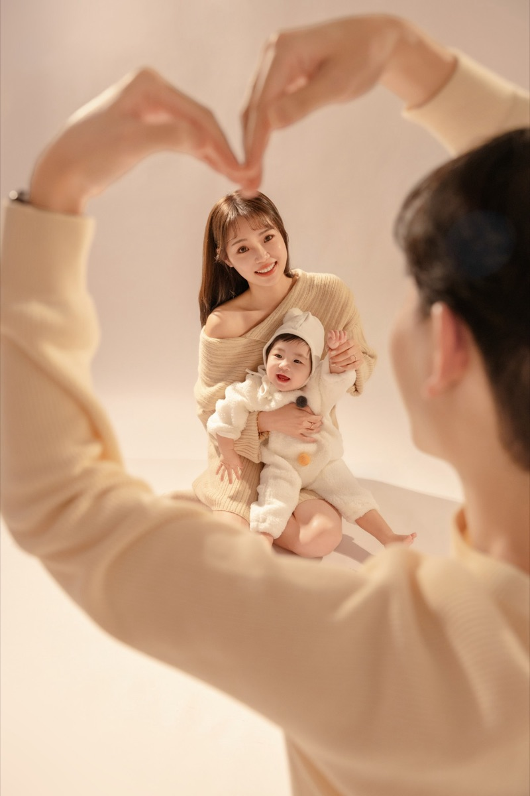

DEAR LIZa little test

Dear Lizfamily, always
Which parent are you, before the photo?
拍照前，
你是哪一種爸媽？
五個問題，三十秒。
你是
服裝、妝髮、風格規劃和寶寶的安撫，
都有我們一起準備。
你只要帶著家人來，好好享受拍照的時間。

Which parent are you, before the photo?
五個問題，三十秒。
服裝、妝髮、風格規劃和寶寶的安撫，
都有我們一起準備。
你只要帶著家人來，好好享受拍照的時間。